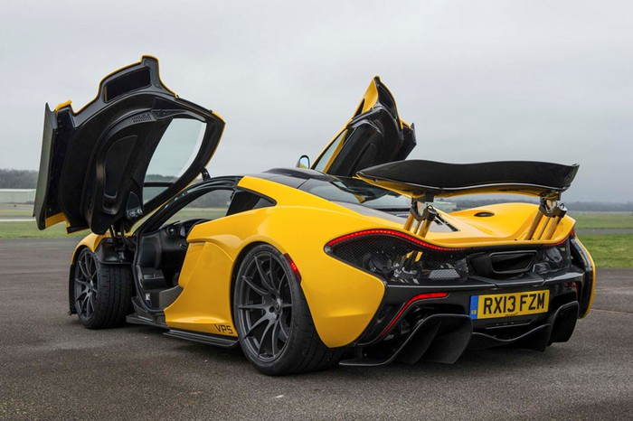
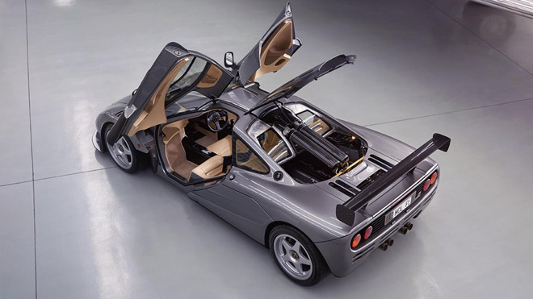
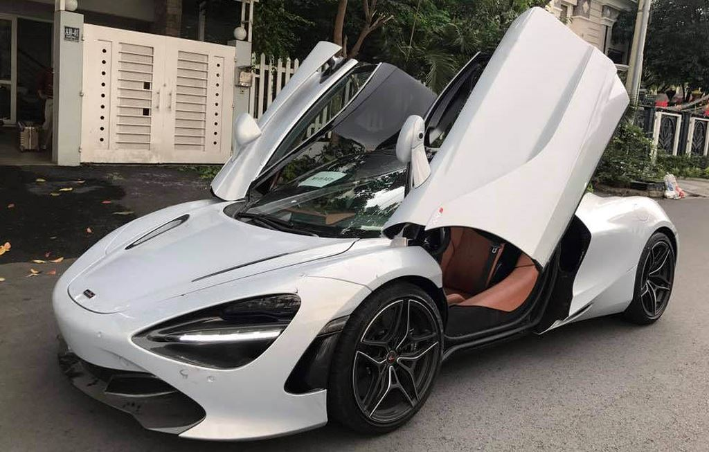
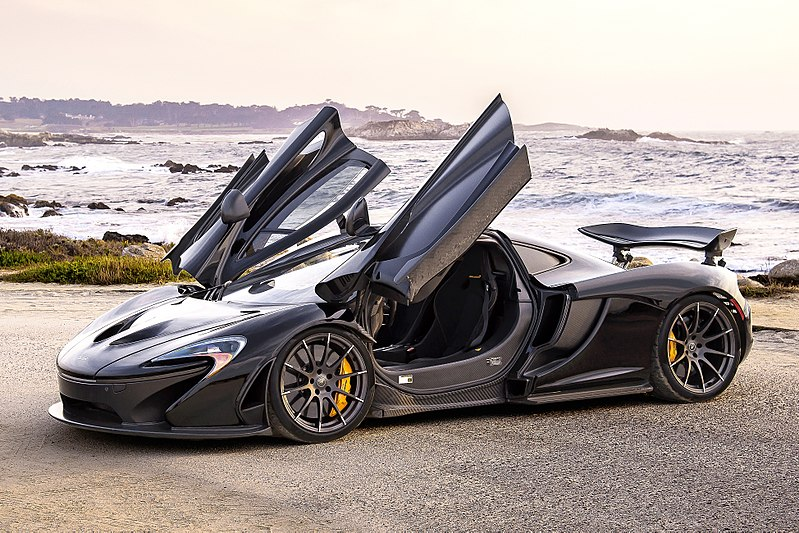
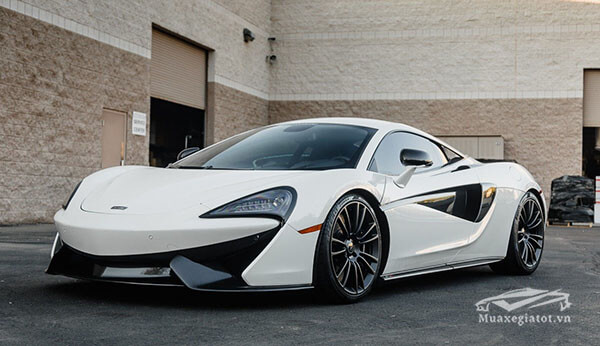

5 siêu xe McLaren đắt nhất thế giới
McLaren, được sáng lập vào năm 1963 bởi Bruce McLaren (1937-1970), là một đội đua nước Anh, vốn nổi tiếng nhất ở lĩnh vực đua xe Công thức 1 nhưng cũng tham gia tại Indianapolis 500-Mile Race, Canadian-American Challenge Cup và 24 Hours of Le Mans. Tên đầy đủ của đội hiện nay là Team McLaren Mercedes nhưng kể từ tháng 1 năm 2007 sẽ được đổi thành Vodafone McLaren Mercedes theo một bản hợp đồng tài trợ lớn từ hãng truyền thông Vodafone được thông báo từ tháng 12 năm 2005. Hiện nay người điều hành đội đua là Ron Dennis, dưới sự lãnh đạo của McLaren Racing, một thành viên của McLaren Group.Năm 1990 McLaren Cars được thành lập để phục vụ cho việc sản xuất xe hơi thông dụng dựa trên chuyên môn sẵn có từ các cuộc đua xe.McLaren là một trong những đội đua thành công nhất ở Công thức 1, có nhiều chiến thắng hơn bất kỳ đội đua nào khác trừ Ferrari, đồng thời cũng sở hữu rất nhiều chức vô địch cá nhân và đồng đội tại F1. McLaren tổng cộng có 11 chức vô địch cá nhân và 8 chức đồng đội kể từ năm 1966.
1. McLaren P1 (2013-2014)
Kế thừa McLaren F1 đã ra đời cách nay hơn 2 thập kỷ, McLaren P1 là sự hồi sinh đáng kinh ngạc của hãng siêu xe đến từ nước Anh, kể từ khi tách khỏi Mercedes. Đây là mẫ Hypercar đầu bảng của McLaren sử dụng động cơ V8 tăng áp kép, công suất 727 mã lực cùng động cơ điện 175 mã lực. Mức giá khởi điểm của P1 là 1,5 triệu USD. McLaren P1 là đối thủ trực tiếp của Ferrari LaFerrari.

2 McLaren F1 HDF
McLaren F1 HDF sở hữu khá nhiều thiết kế khí động học, động cơ 680 mã lực của chiếc F1 LM và khung gầm mang số thứ tự #18. Siêu xe cực hiếm này thuộc sở hữu của công ty phân phối kiwi và tay đua nghiệp dư Andrew Bagnell.Gói HDF được yêu cầu bởi chủ sở hữu đầu tiên vào năm 1994 với cánh gió carbon cỡ lớn ở phía sau, cánh gió trước lớn hơn và 2 hốc gió ở nắp ca-pô và mui xe.Chưa hết, hệ thống treo được thay đổi, bộ vành kích thước lớn và động cơ được xây dựng theo động cơ của F1 LM cho mô-men xoắn tăng hơn 1.000 vòng/phút so với động cơ V12 tiêu chuẩn. Động cơ mới này sản sinh công suất 680 mã lực.

3. McLaren 720S
McLaren 720S vừa giành được giải thưởng danh giá "Siêu xe đẹp nhất thế giới năm 2017" do tổ chức International Automobile Festival đánh giá xếp hạng.Mẫu siêu xe này sở hữu sức mạnh đáng nể trong thế giới siêu xe. Trái tim mang sức mạnh cho McLaren 720S nằm ở động cơ M480T mới thay thế cho loại động cơ 3.8L trước đây. Động cơ V8 4.0L Twin-Turbo đạt công suất 720 mã lực (537kW) tại 7.500v/ph và mô-men xoắn cực đại 770Nm tại 5.500v/ph, hộp số 7 cấp SSG và dẫn động cầu sau. Nhờ trọng lượng rất nhẹ - trọng lượng khô chỉ 1.283kg và lên mức 1.419kg khi đổ đầy các chất lỏng cùng 90% nhiên liệu, siêu xe McLaren 720S có khả năng tăng tốc 0-100km/h mất 2,9 giây; 0-200km/h mất 7,8 giây và 0-300km/h mất 21,4 giây. Vận tốc tối đa đạt 341km/h.

4. McLaren P1 LM
McLaren P1 có 3,8 L; Động cơ V8 tăng áp kép, dung tích 231,8 cu trong (3.799 cc) . [14] Tua bin đôi tăng động cơ xăng ở mức 1,4 bar (20,3 psi) để cung cấp 737 PS (542 mã lực; 727 mã lực) tại 7.500 vòng / phút và mô-men xoắn 531 lb⋅ft (720 N⋅m) tại 4.000 vòng / phút, kết hợp với một động cơ điện được phát triển nội bộ sản sinh công suất 179 PS (132 mã lực; 177 mã lực) và mô-men xoắn 192 lb⋅ft (260 N⋅m). Động cơ điện và động cơ xăng trong P1, tạo ra công suất kết hợp là 916 PS (674 mã lực; 903 mã lực) và mô-men xoắn 723 lb⋅ft (980 N⋅m). [15] Động cơ điện có thể được người lái triển khai bằng tay hoặc để ở chế độ tự động, theo đó ECU của xe'lấp đầy mô-men xoắn' các khoảng trống trong đầu ra của động cơ xăng, được coi là độ trễ turbo. Điều này mang lại cho hệ truyền động một dải công suất hiệu quả gần 7.000 vòng / phút. [16] Chiếc xe được dẫn động cầu sau với hộp số ly hợp kép 7 cấp được phát triển bởi Graziano .

5. Mclaren 570
Siêu xe Mclaren 570S có kiểu dáng thể thao và lôi cuốn nhờ ngôn ngữ thiết kế mang vẻ đẹp hoàn mỹ đậm chất Anh Quốc. Nhằm tối đa hóa trải nghiệm người dùng, nội thất của Mclaren 570S có thiết kế mang hơi hướng thể thao, hòa quyện cùng khả năng vận hành mạnh mẽ trên nền chất liệu cao cấp được gia công tinh xảo. Táp lô của Mclaren 570S có thiết kế tối giản, không xuất hiện quá nhiều nút bấm tạo cái nhìn trang nhã, dễ chịu với vô lăng 3 chấu không nút bấm.
